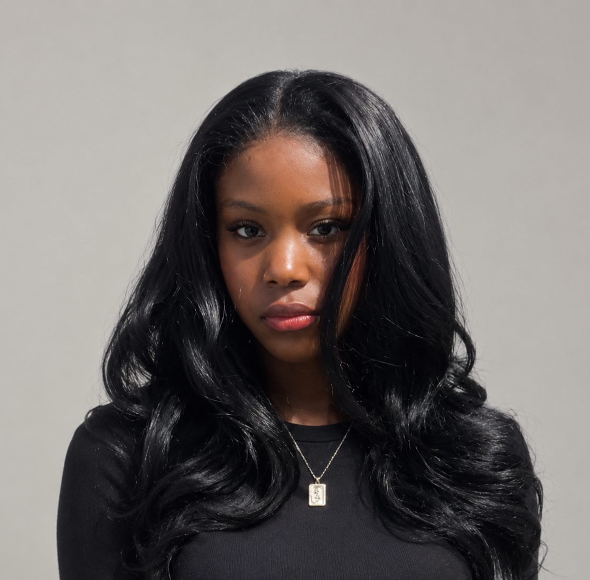

Fall 2026
Preparing for ATMAE
My paper on an assistive robotic bathing tool was accepted, and I'm preparing to present the work orally at the 2026 ATMAE conference.
About the paper →Software Engineering · Robotics & Automation · Research
I'm a software engineering student with a focus on Robotics & Automation at the University of Central Missouri. I am interested in designing adaptive robotic systems that understand user intent and improve physical accessibility, independence, and everyday life.
I thrive where software meets hardware to build adaptive, human-centered assistive technology-spanning mobility, vision, hearing, and physical independence. My work explores how intelligent systems can seamlessly understand human intent to assist and augment everyday activities. Through a design-driven approach, I bridge embedded systems, mechanical design, spatial computing, and multimodal interface intelligence. I am happiest when I am actively building, testing, and refining functional prototypes that make technology work better for human needs.

What I'm curious about
I'm especially interested in robotics that can interact with people safely and adapt to their needs.
Lately
My paper on an assistive robotic bathing tool was accepted, and I'm preparing to present the work orally at the 2026 ATMAE conference.
About the paper →As team lead of our 2026–2027 NASA Human Exploration Rover Challenge (HERC) team, I coordinate mechanical, electrical, and software engineering workstreams, manage project milestones and safety requirements, and oversee system integration. I also led our HERC proposal development and submission, including the preliminary rover concept, resource planning, and technical documentation.
Follow the project →Presented my research on self-dificulty in the U.S and how force-aware control end effector could support bathing assistance for adults with mobility limitations at the 2026 MOKANNE Heartland McNair Research Conference.
Follow the project →On my workbench
Exploring how a soft-contact robotic end-effector could support bathing assistance for adults with mobility limitations.
Research details →Helping coordinate rover development, technical decisions, and the integration of our team's systems.
Project details →Exploring natural-language querying and comparing it with traditional text search in a mixed-reality environment.
Research details →Writing & research
Research on an assistive robotic end-effector designed for soft-contact bathing assistance.
Accepted; final publication details will be added when available.
Publication details →Say hello
I'm always interested in learning from people working in robotics, assistive technology, and related research.